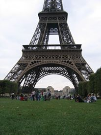
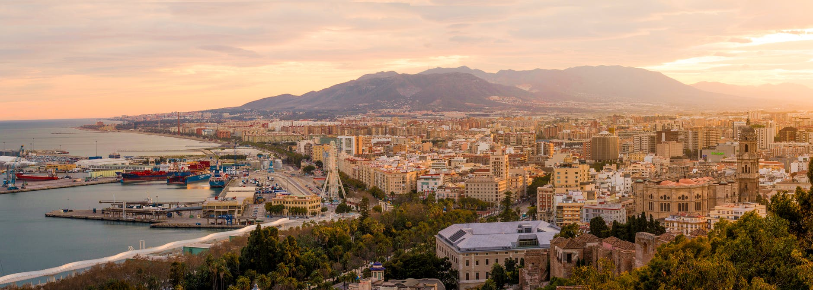
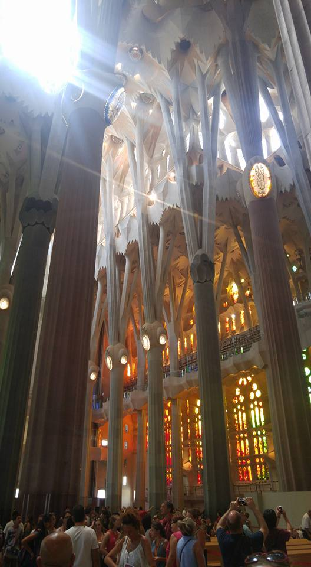
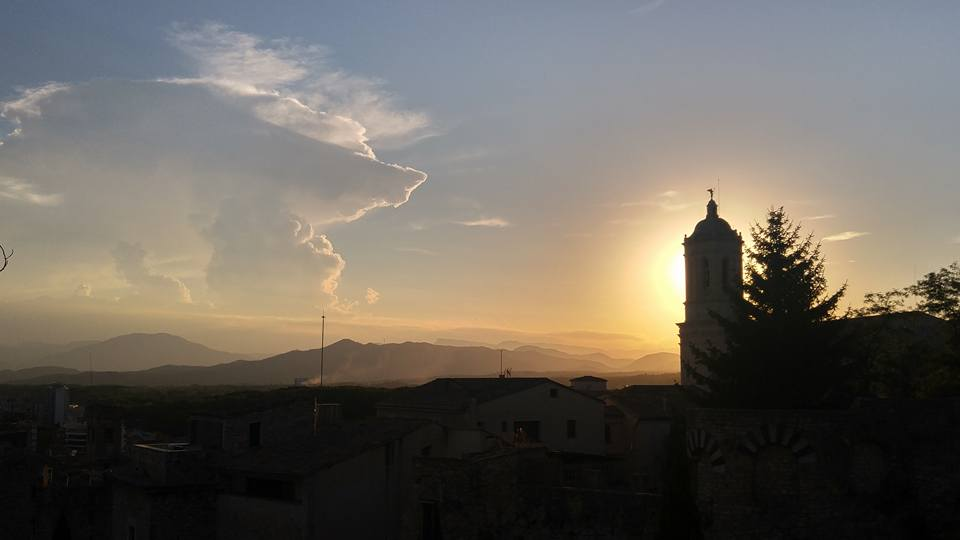

I sincerely love to travel. I love the notion of expanding my view on the world, seeing amazing and mundane things, and getting a chance to leave where I live to "just see what is out there". In my travels I have spent time in Paris, Orleans, Versailles, and Angers in France. The history of France was amazing, deep, and the food there was just fantastic to experience and enjoy.


Some of my most recent times travelling have been to Spain. My first visit was southern Spain to Sevilla, Granada, Cordoba, Ronda, and to Gibraltar. This was my first time to Spain and there was something about Southern Spain with the white hill villages, the rolling countryside filled with olive tree orchards for as far as the eye can see, and something very Mediterranian that set it aside from any of my previous experiences.
 
Barcelona was my last large vacation and trip out of the country. We visited the Sagrada Familia , Park Guell, stayed at an Air BnB on La Rambla, explored the Casa Mila, and had visited the Chocolate Museum, as well as visiting Girona (where Game of Thrones was partially filmed) and Sitges on the coast.
“Travel isn’t always pretty. It isn’t always comfortable. Sometimes it hurts, it even breaks your heart. But that’s okay. The journey changes you; it should change you. It leaves marks on your memory, on your consciousness, on your heart, and on your body. You take something with you. Hopefully, you leave something good behind.”